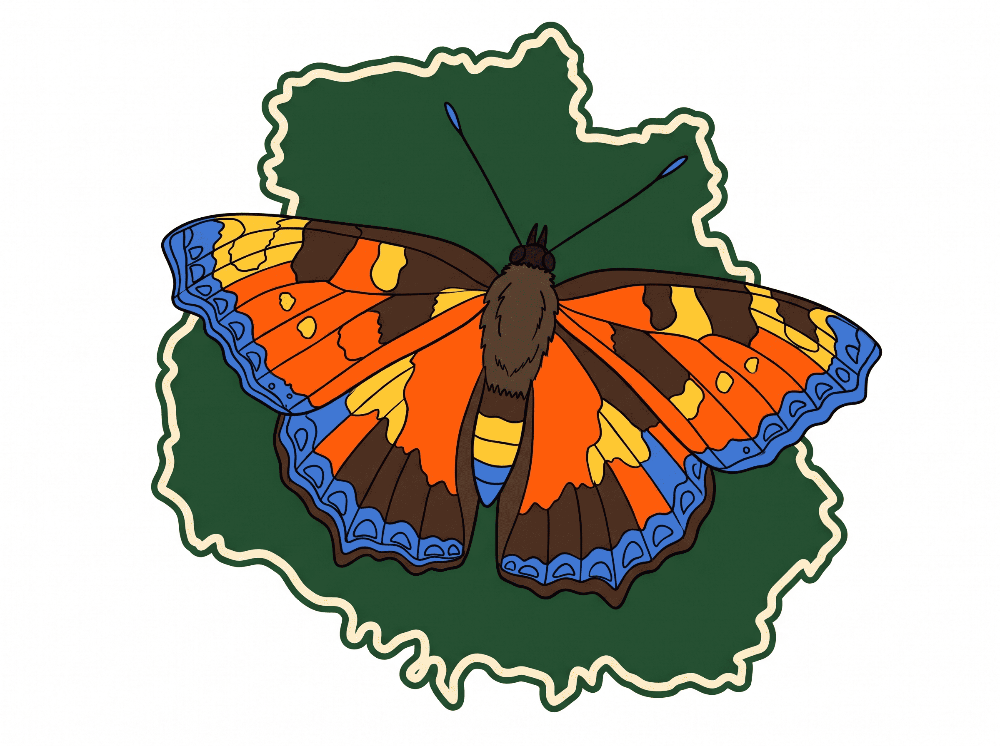
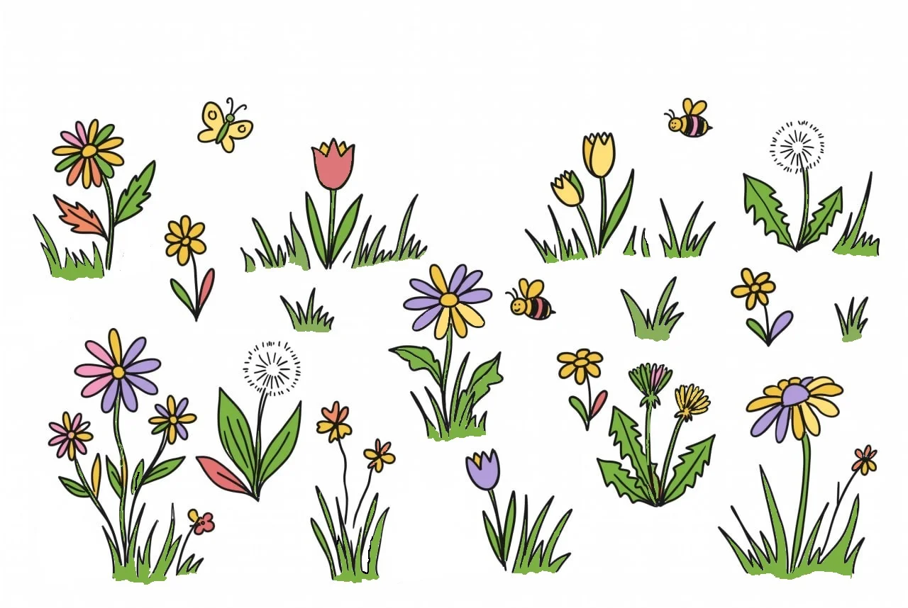
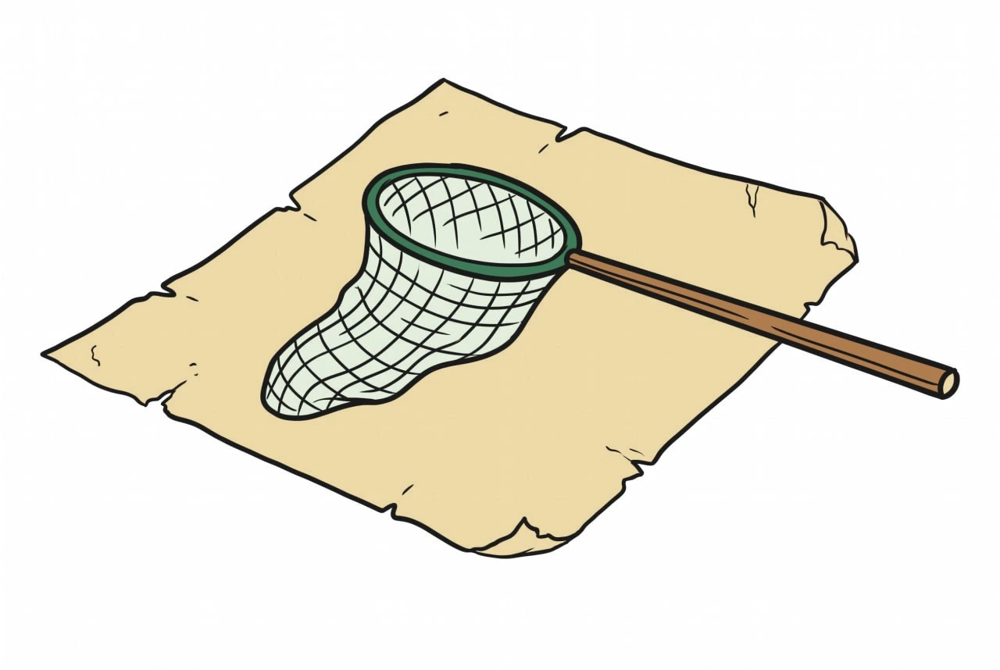

Метелики Вінниччини
Лісостепові ландшафти Вінниччини з їхніми розлогими луками, густими лісами та річковими долинами створюють ідеальні умови для життя сотень видів лускокрилих. Цей сайт — ваш провідник у тендітний світ метеликів нашого регіону.

Лісостепові ландшафти Вінниччини з їхніми розлогими луками, густими лісами та річковими долинами створюють ідеальні умови для життя сотень видів лускокрилих. Цей сайт — ваш провідник у тендітний світ метеликів нашого регіону.

